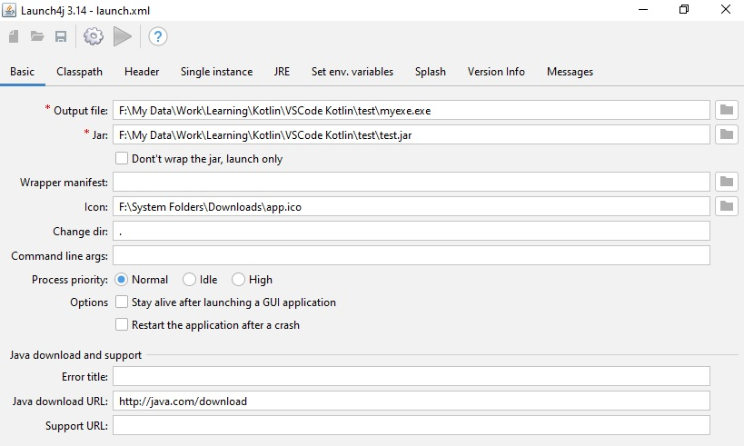
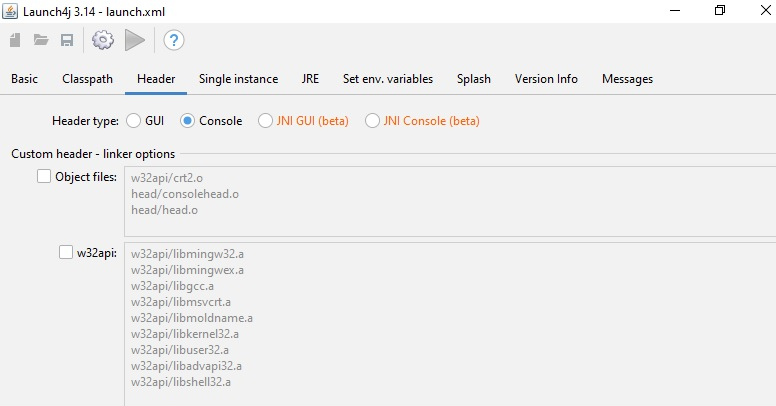
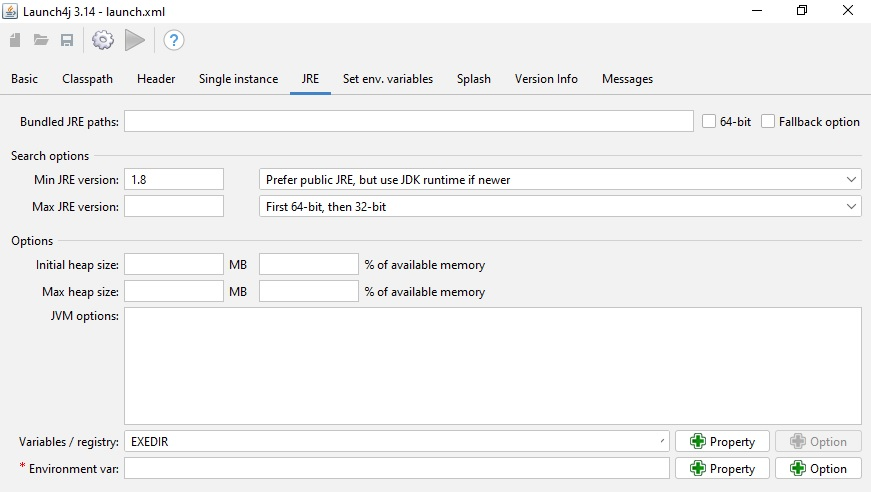

Using Kotlin Compiler in command-line
- Download kotlin-compiler.zip and extract it any folder.
- Add path to environment variable in System settings e.g F:\Programs\kotlin-compiler\kotlinc\bin
-
Create a empty folder 'test'. Create new folder 'src' to hold all
source code. Add a new file App.kt in
src folder with following code
/* test/src/App.kt */ import models.* fun main() { var abhay = Person() abhay.show() } -
Create a new folder 'models' inside src folder. Add a new file
Person.kt in models folder with
following code
/* test/src/models/Person.kt */ package models class Person { var firstName: String = "Abhay" var lastName: String = "Nath" var city: String = "Mumbai" fun show() { println("Name = ${firstName} ${lastName} \t City = ${city}") } } -
To compile the 'src' folder, use kotlinc command.
kotlinc src src/App.kt -include-runtime -d test.jar
This will create a new jar file 'test.jar' -
To run a jar file,
java -jar test.jar
-
To compile and run at one command
kotlinc src src/App.kt -include-runtime -d test.jar && java -jar test.jar
Using Gradle command-line for creating Kotlin App
- Make sure gradle is installed and GRADLE_HOME is set.
- Create empty folder and run following command inside the folder
gradle init
Select the options as per your requirements. It will generate the project. -
Run app
gradlew run
-
Bundle the app
gradlew build
Hello World Application in Kotlin using IntelliJ Idea
- Run Intellij Idea. Select 'New Project -> Kotlin'
- Type the Project name in the input box.
- Intellij will create a 'src' folder.
- Right click on src folder, select 'New->Kotlin file/class'. File name is 'app.kt'
-
Add following code snippet in 'app.kt'
fun main(){ println("Hello World Kotlin !") } - Build and run application by pressing on green arrow against main function
Creating JAR from Intellij Idea console project
Add following task inside build.gradle.kts and run jar task from Gradle palette. Then rebuild project.
tasks.jar {
manifest {
attributes["Main-Class"] = "MainKt"
}
configurations["compileClasspath"].forEach { file: File ->
from(zipTree(file.absoluteFile))
}
duplicatesStrategy = DuplicatesStrategy.INCLUDE
}Creating EXE from JAR file
Install Launch4j
  